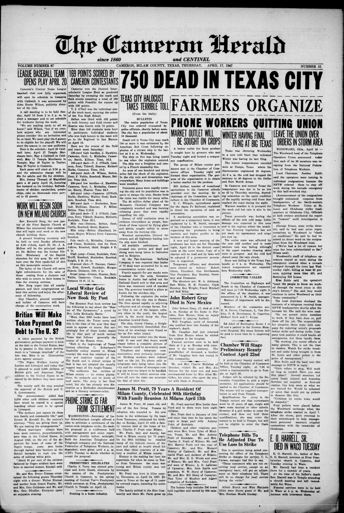

HN-562: Texas City disaster proclaimed to have killed 700
HN-562 · April 17, 1947 · Disasters, Accidents & Emergencies > Explosions, Industrial & Workplace Disasters > Explosives depots and munition blasts

page scanRecorded finding
Texas City 17 April 1947: Medford Mail Tribune quotes Red Cross 714, governor 600–650 and ~400 bodies recovered; Pampa News 650; Cameron Herald 'may reach 700'.
Discovery narrative
Source: Decatur Daily Democrat, p. 1 — original page; Texas State Historical Association, Texas City disaster.
Report: “Texas City Explosion Death Toll 700” presented a sweeping casualty estimate after the explosion of the ammonium-nitrate-laden SS Grandcamp and the subsequent devastation of the port.
Assessment: The contemporary 700 headline was not a verified final toll. The Texas State Historical Association explains that the anchor monument records 576 known dead, including 178 listed as missing, and that an exact count may never be known; other retrospective sources give somewhat different totals. A second ship, High Flyer, exploded about sixteen hours after Grandcamp, further complicating initial reports.
Curated audit flag
Class: Printed differences (V)
Recorded difference/concern: Texas City 17 April 1947: Medford Mail Tribune quotes Red Cross 714, governor 600–650 and ~400 bodies recovered; Pampa News 650; Cameron Herald 'may reach 700'.
Assessment: Different official estimates and recovered-body measure; source/clock required. Grandcamp and later High Flyer explosions are sequential.
Source links: https://oregonnews.uoregon.edu/lccn/sn97071090/1947-04-17/ed-1/seq-1/ https://texashistory.unt.edu/ark:/67531/metapth577266/m1/1/ https://newspapers.swco.ttu.edu/server/api/core/bitstreams/f999ec82-dbe2-41bf-8e29-4865dbc0e7b3/content
Original archive images (5)
Authentic images retrieved from The Portal to Texas History (University of North Texas), Historic Oregon Newspapers (University of Oregon), Hoosier State Chronicles (Indiana State Library) and Southwest Collection (Texas Tech University). Article crops are located using the archive's own OCR word coordinates and rendered at native crop resolution; article clips are assembled from the archive's own article-block images; page images marked "archive tiles" are stitched from the archive's own tiled page service at its 256-px tile cap; page images marked "issue PDF" are single pages rasterised from the archive's own issue PDF, with the page chosen by matching the headline against the PDF's text layer; page scans are reduced-size access renditions. No images were generated, mocked, or retouched.

The Portal to Texas History (University of North Texas)
Open larger view · Archive viewer (full resolution)

Historic Oregon Newspapers (University of Oregon)
Open full-resolution crop · Page scan · Archive viewer (full resolution)

Historic Oregon Newspapers (University of Oregon)
Open full-resolution crop · Page scan · Archive viewer (full resolution)

Hoosier State Chronicles (Indiana State Library)
Open larger view · Archive viewer (full resolution)

Southwest Collection (Texas Tech University)
Open larger view · Archive viewer (full resolution)
Source acquisition
Status: Archive images acquired
Authentic archive-owned image renditions were retrieved for this record and are displayed above. The source-acquisition manifest preserves the original pre-acquisition feasibility assessment.
Original seed
URL (preserved verbatim): https://newspapers.library.in.gov/?a=d&d=DCDD19470417.1.1
Saved research report: Historical_Newspaper_Event_Research_553-577_2026-10-23.md
Evidence note: A newspaper report means a historical publication made a claim; it does not establish that claim as fact. Contemporary reporting is separated from later scholarly context and our own assessment.